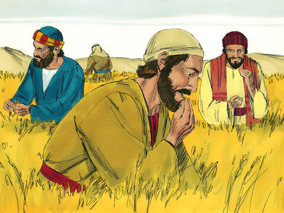
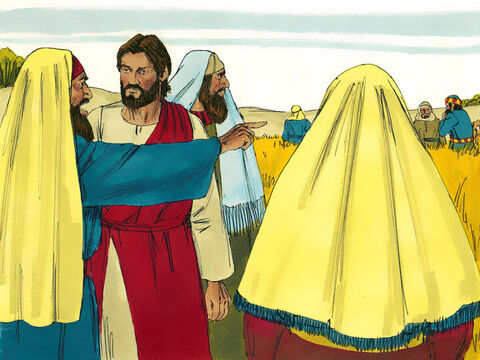
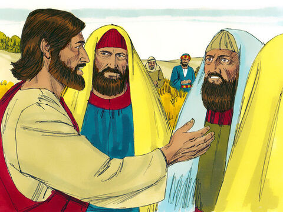
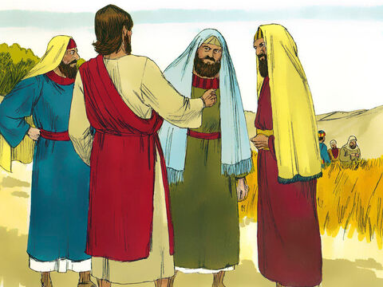

Lord Jesus Is Lord Of The Sabbath
At that time Jesus went on the sabbath day through the corn; and his disciples were an hungred, and began to pluck the ears of corn and to eat.
But when the Pharisees saw it, they said unto him, Behold, thy disciples do that which is not lawful to do upon the sabbath day.
But he said unto them, Have ye not read what David did, when he was an hungred, and they that were with him;
How he entered into the house of God, and did eat the shewbread, which was not lawful for him to eat, neither for them which were with him, but only for the priests?
Or have ye not read in the law, how that on the sabbath days the priests in the temple profane the sabbath, and are blameless?
But I say unto you, That in this place is one greater than the temple.
But if ye had known what this meaneth, I will have mercy, and not sacrifice, ye would not have condemned the guiltless.
For the Son of man is Lord even of the sabbath day.
Matthew 12:1-8
- 
- 
- 
- 